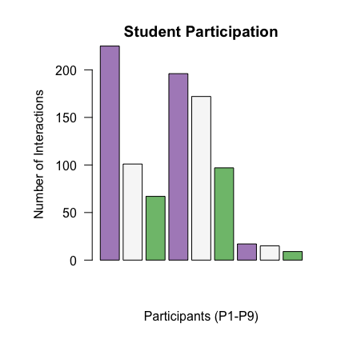

Table 1. Development of Makers
| Participant |
Actor |
Audience |
Total |
| P01 |
|
|
|
| P2 |
|
|
|
| P3 |
|
|
|
| P4 |
|
|
|
| P5 |
|
|
|
| P6 |
|
|
|
| P7 |
|
|
|
| P8 |
|
|
|
| P9 |
|
|
|
| P10 |
|
|
|
| P11 |
|
|
|
| Total |
|
|
|
Table 2. Development of Teachers
| Participant |
Teacher |
Student |
| |
Actor |
Audience |
Actor |
Audience |
| P10 |
|
|
|
|
| P2 |
|
|
|
|
| P4 |
|
|
|
|
| P5 |
|
|
|
|
| P01 |
|
|
|
|
| P3 |
|
|
|
|
| P6 |
|
|
|
|
| All P |
|
|
|
|
Table 3. Development of Engineers
| Participant |
Novice |
Expert |
Engineer |
| |
Actor |
Audience |
Actor |
Audience |
Actor |
Audience |
| P1 |
|
|
|
|
|
|
| P2 |
|
|
|
|
|
|
| P3 |
|
|
|
|
|
|
| P4 |
|
|
|
|
|
|
| P5 |
|
|
|
|
|
|
| P6 |
|
|
|
|
|
|
| P10 |
|
|
|
|
|
|
| All P |
|
|
|
|
|
|
Table 4. Collaborative Roles
| Participant |
Project Manager |
Evaluator |
Problem-Solver |
Modeler |
Collaborator |
| |
Actor |
Audience |
Actor |
Audience |
Actor |
Audience |
Actor |
Audience |
Actor |
Audience |
| P1 |
|
|
|
|
|
|
|
|
|
|
| P2 |
|
|
|
|
|
|
|
|
|
|
| P3 |
|
|
|
|
|
|
|
|
|
|
| P4 |
|
|
|
|
|
|
|
|
|
|
| P5 |
|
|
|
|
|
|
|
|
|
|
| P6 |
|
|
|
|
|
|
|
|
|
|
| P10 |
|
|
|
|
|
|
|
|
|
|
| All P |
|
|
|
|
|
|
|
|
|
|
“The reason you have to connect the top of the bridge together even though the bottom is attached,is that if there is wind, what is going to happen is that the bridge is going to want to buckle this way. But you don’t want a bridge to buckle.
Anna and Andy, just FYI I’m going over the questions that were due today if you want to take those out.
So questions 3 and 4 were asking you about what the purpose of the struts,lateral brancing, and portal bracing.And the top the bridge has to be connected so the bridge doesn’t buckle or bow or something. So the bracing on the top of the bridge is for protection against wind blowing
The portal bracing over here is also is designed to keep the bridge from tipping over sideways because of things like wind or uneven loading of stuff on the bridge.So why are truss bridges are less common today
—that was question 5. So I was thinking about a question Ryan asked way back in the beginning.
who?
oh what did she ask?
Who, Ryan!
it’s a joke.
Its because we have these huge bridges in new York and on the interstates that go for really really long stretches without abutments or piers, how are they being supported without trusses.
It’s because our beams are way better designed now, so we can have flat bridges, because the quality of our materials is way better.
oh that’s what I said. Uses a lot of materials which could be excessive.
The other thing has to do with the cost of skilled labor the more complicated assemblying a structure is the greater the cost of paying some construction team to do that work. So assemblying the earliest skyscrapers. I don’t know if you guys have seen those photos of workers eating lunch on a high beam and their like at the top of the empire state building.
oh yea.
So the reason we could afford to build these structures is because it was super cheap and we didn’t really have to think about paying these workers very much, which to I think unethical.But now we do think about paying people a fare wage, I hope, which is why now the cost of building a more complicated bridge is increases relative again to having a flat bridge.
Which method of loading is better?
What this question is asking is when we are going to squish are bridge are we going squish our bridge from the top or hang a bucket on the bottom and pull down on it.
I would rather do the bottom.
And why?
Cause that’s where the weight’s gonna be.
:exactly.So like loading it from the bottom is a more accurate way of demonstrating how this bridge were to be used if it were full sized.But loading it on top, and this is something we are going to talk about later, will still be testing the same amount force on this bridge. So when we test it were going to put our load on top just because it is easier than having something hanging from the bottom and the bridge will still be able to support it.
So some of these questions are pretty straightforward—like Why is the bridge too strong?
To be safe
What if there was like a huge traffic jam instead of just one car driving over.
:yes,you want to anticipate the extra load and account for the deterioration of materials over time. So we talked about how bridges have to be inspected every year, and its to make sure that one of those members isn’t comprised, but having a bridge that is too strong can protect against the bridge failing while were waiting for it to get inspected and fixed.
the last question how does construction quality affect structural performance?
some like mistake can result in the structure not being able to support the full weight
thank you P2.
the stronger something is the better
oh I don’t know anything.
I think this is a good place for me to stop talking and just let you guys work it out, because the more thought you put into how you construct this bridge, the better it will perform when we test them. So you might not be surprised to know that the more carefully constructed something is the better its going to be, but I think that’s a good place to continue with our construction.
“This is so frustrating;we’re missing [points to part on model bridge]”
“ I know. AndI made these, I’m pretty sure.”
“Wait, so I have a question. If we’re attaching this and this is like that [points to part on model bridge].
Okay, well that one…there all missing…Yea, so like how do we attach it over here?
Do we glue it to that and then it comes out [looking at model]?
“Once we start gluing this part together [working with model]. See it’s on the other side, so we have to glue the top and then the sides together, and then…
actually I don’t know.”
“We go like this [places pieces on template]. Should we glue those on now?
”
“Oh, we should do those…yea, yea, yea.
We should do this…cause then we can do this.
Is it on it? She said I have to go farther down.
Okay, should we start gluing this [points to P5s side]?”
We should glue…”
“We want to do that [points to P2s side]”
“Wait, can we get rid of, can we just put it to the side?”
P6 yea, I was just trying to…
[comes over]
“We have to glue this…
Wait,this is longer than the thing [compares piece to template]”
“I didn’t notice that”
P10, I have a question. This is like longer than the…
Yes, okay. That’s a great question.
They kind of made it longer than they had to be because they join at an angle. Do you see that line there?
So you have to cut them on that angle before you glue them to the gusset plate.
“okay”
you actually have to cut it at this end too.
“[P5] do you want to do this?
I feel like you would be better at it.”
[silence]
“Okay, I guess I can ruin it.”
“What am I doing?
[lines up piece to dotted line and begins cutting].
There is no science behind what I’m doing.
[cuts one side of cube, picks up and readjusts to cut the bottom side of cube, so as to not crush]”
Okay, can I move this like closer to me.
[acknowledges]
Okay I think this will work. Okay I think this fits now. Oh perfect, perfect.
Okay, do you want to glue this.
Can I turn it this way, and you can glue this while I can cut this one.
what. okay.
I’m so bad, I need someone to do this with me.”
“Yea, can…let me just finish cutting this.”
yea put on water next. Why are you playing this song?
andy is like no I will not be peer pressured.
[singing] It’s gonna be me singing in this video. Oh we should probably skip it when it gets to the part.
this is ready, p5.
Oh you should skip it to the next song right now. Okay, we’re listening to this.
can you hold the top one.
do you want me to hold these.
can you hold that one.
can I move this back?
[passive acceptance of request]
we should do the top one.
I think that we did it wrong.
We did it wrong?
Yes, cause I think these are supposed to be flush with the top of this, you see what I mean.
yes, I do see what you mean;
we can fix that.
oh P2, its not supposed to go there.
its all good. [peels apart]
where does it go?
not there.
Okay, let’s think about the next thing.
we need to fix these.
are you sure those are not right?
yea, look [looks at G2]
[all unpeel pieces]
P6 “Whats wrong with this? Will you fix that…will it stay. If I turn it, can you. Does that work?”
“I think its like…[smoothes out piece]… oh I’m gonna get glue [on me].”
P5 “We have to do…” “Nupur, Do the top chords have to be cut diagonal to fit this?”
“Yes”
I can do it.
I can try[tries cutting for the first time]
“Can I see that for one second [Exacto knife]?”
[Does not respond until she is finished cutting; gives p2 the knife]
[cuts]. “Freehand!”
[Responds to comment with facial expression, possibly showing annoyance.
I think I learned something about your group. You have way too many of some.
At least we’re putting in the effort.
oh we need an extra one.
turns to G3
no anna turn around, don’t show ours.
do you want me to cut this one?
[no response]
can you hold this one
[hold a gusset plate]
“Does yours fit, like perfectly?”
no
“Oh, mine does.”
P5 “[laughs, sarcastically]…oh.”
“Should I put these on here.”
“Do you want to finish this side first?”
P6 “yea.”
“Okay. Is this supposed to be connected to something?”
P5 “No.”
“Are you sure?”
P5 “Yeah.”
P6 “on that?
[reaches for glue]”
“yeah”
P5 [holding two pieces together]
[singing]
P6 [gluing]
P5 [stabilizing]
[stabilizing]
P6 [stablizing]
“It just like puckered because of the glue.”
P6 [stabilizing pieces]
“Want to put glue here and here while I hold it.”
[stabilizes]
[reaches for glue]
“Does it look like the camera is on it?”
“Wait how do you know which number goes where? Or are you just trying?”
P4 “You just got to try it out.”
P4 “The skinny one go down here.”
“right here?”
P4 “dude, get out of here.”
“what do you mean”
P3 “Those don’t go there.”
“alright, where do they go?”
P4 “They go here.”
P3 “nope, no…we only use three of them….there you go. So, we’ll lay it all out.”
P4 “and we’re going to need two really really long ones.”
look at theirs they pretty much have nothing done. And look at ours we’re pretty much like we’re doing find, and look at them—like what’s up with this –wow, wow.
P3 hey can we play music.
no, actually yea we can; she wants a realistic
P3 I don’t think these are the right ones though-we need top chords.
what do you mean
P4 some of them are shorter.
yea, cause drew didn’t know how to cut them.
P4 no cause the shorter ones are for the verticals.
hehe
P3 “Alright, so I think we should glue down the thin struts first to the gusset plates.”
P4 “Alright, so we got everything laid out.”
P3 “Yea, so lets glue down the thin struts first.”
P4 “yea, let’s get some glue. That’s what I’m saying.”
P3 Nupur, could we get some glue; what are we using to glue the
youre using wood glue to glue the manila folders.
P3 okay, could we get some wood glue then.
yes.
alright, which one should we glue first, we should glue the numbers first?
P3 yes.
So we got to take this apart again.
P3 no,
yes, cause we got to glue this first.
P3 we should do the long ones first.
why do we do the long ones first.
P3 like onto the numbers there.
oh alright.
P4 alright guys,ready
not really.
P4 its about to get wild.
Oh you just go right over it?
P4 of course.
P4 “I’m just going to slap a little glue there.”
P3 “one, two, and the bottom part of one over there”
P4 “Ah, it’s all over my fingers now.”
P3 “Put more on it.”
P4 “It will spread out, yeah…thanks, thanks dude”
“Yea, no problem.”
P4 “I’m so glad I have you.”
P4 [exclamation]
P3 “Put some here here, we’re gonna get this.”
“We’re gonna get this long one first, so that it will all like…”
“Wait don’t we first have to glue it to the bottom?”
P4 “Guys [G1], how much glue are you using?”
“Wait, that’s way too much.”
P3 “That’s way too much.”
P4 “Girls, how much glue are you using?”
“Wait, P3, don’t we have to glue it to the paper first!”
P6 “I wouldn’t put the glue on the thing.”
“That’s what I’m saying…oh my god, what are you doing”
P4 “Alright, you know what…we’re going to take 2, we’re gonna take 2”
“Don’t we have to glue it to the!”
P3 “Guys.”
P4 “We’re gonna take two.”
P3 “Hold that down. Hold that down.”
P4 “Yo. Watch your sleeve”
P3 “Oh son of a gun. Its just glue.”
P3 “P4 you put no glue on the bottom.”
P4 “Alright, you know what, let’s cry.”
P3 “Just spread it out.”
P4 “Just like rub it all over it…yeah, get it on there.”
this is just rough
P5 let’s put this one here.
P4 Okay, our bridge is going to fall down asap. Does this like rub off.
I’m so confused; how does this stick to the paper. Don’t we have to glue it under too.
P3 no
P4 no, we don’t glue it the paper.
Oh yea, at the end we’re going to take it apart. duh.
P4 “I feel like we need some meat on these. We got to get some meat on this bridge”
P9 “I agree. Way more meat.”
[laughs] “Yea, what’s the meat of the bridge?”
P4 “The thick ones.”
P4 “Put it like there and there.”
“Where do you want it? Here?”
P4 “A little more there…yea.”
No, I let her know that we listen to music in here…its chill.
Alright, I’m about to just
I listened to both of those songs --I like water
you like water, of course you like water, why you like water
P4 you don’t like that song.
no, funny but…
P4 you want me to play it.
No I'll play it.
P4 no I’ll play it…you aint gonna play it.
P4 You play it you play it.
[plays song]
P4 you just played a song.
its not water.
P4 okay play it next then.
okay its next.
is this allowed to be on the video
P4 its very explicit.
P4 I think we could use a thinner popsicle stick if you have those.
no its actually better to have thicker glue. Alright so just slobber it all over?
Imagine making one of these in real life.
I don’t get how they do it.
P3 “Guys, I think we used the wrong one; We used the wrong one for right there.”
P4 “uuugh, what do you mean”
P3 “Cause like that fits there.”
P4 “No those are the same.”
P3 “And that one doesn’t there.”
“Okay”
P3 “Oh, you’re right though, I see what your saying”
P4 too late now.
P3 “Make sure that one gets some glue.”
“Put some glue.”
P4 “Yea. You cut those perfectly.”
“Let me get that [glue].”
P4 “yea, yea, yea. Slobber some there.”
P4 put it like there and there.
where you want it, there.
a little more, yea.
right here.
P4 yea.
P5 put a little in the middle right there.
P4 oh true cause it sits there.
P5 now line it up right there.
P4 wait slobber some in there, inside there
P5 got it, let’s hold it there for a second.
P4 yo, you cut those perfect. I feel like too much glue might be bad
I think its better.
P3 do this.
where
P3 the two ends.
do you want it in the middle also.
P3 no cause it will stick to the paper.
but the other one is sticking to the paper also.
P3 no its got that thing right there.
oh smart.
P4 wait can I see that for a second.
where do you want it. Right here. [glue]
omg that is so much.
P4 omg that is so much.
P3 can you put glue on this andy, on the bottom.
P4 should we slobber some there, between those two.
yea.
P4 this is going to be stuck to this.
P3 yea, but they took it off no problem.
yea, it’ll be fine once it dries.
here anna take it.
P7 whats the new one with water in it.
a boogie and Kodak.
P4 wait we need a really long one. We’re missing one. Oh right there. No I think its like that.
do they have glue on them.
P3 no its not
P4 are you sure, oh yea, I don’t know. Okay lets do it like that.
let’s do the other diagonals in first
P5 Can you get glue on the five.
P4 this is the vertical one?
alright where do you want. On top
P4 yea, on top.
P4 should we glue these together
P5 yea.
wait you want me to put it right there; actually open them apart a little and I’ll put it in.
P3 its pretty good.
it does look nice.
“Alright, wait let me push this back for a sec.”
“Jeez…do we have any Exacto knives.”
[goes and gets one and begins using]
[goes and gets an exacto]
[mouths music]
“I’ll play some.”
“Yea, do you want to play some. My phone is dying.”
“I can do that for you P01. But I don’t have the kind of music you guys do.”
“That’s okay.”
“I have so many different kinds of music. You can play whatever.”
“Not me.”
P4 [returns with exacto]
“Alright, [rotates bridge]”
[working with exactos to release bridge]
“Don’t worry about cutting the white paper.”
“Yea.”
“I didn’t know this glue was going to be this powerful.”
“Yea.”
“Nothing is ever gonna come apart though.”
“Yea, last one. K, that’s good.”
[Holds bridge up to evaluate it.]
[Rotates bridge to evaluate other side.]
“Woah.”
“Pretty good.”
“It’s good.”
“Alright.”
“Alright, so what do we want to do now?
… We want to do this [points to other side]?
We already know how to do one.”
“Yea.”
“Alright, so we’ll get this done.”
“Wait, you want to do this side or let’s just do this again.”
yea, this part looks more complicated; let’s just do this again.
Let’s just pull out the stuff
get the right pieces
that goes there.
want me to get glue
not yet, lets just lay this out.
[cutting ends]
I’ll do that let me see
I got it.
how many of these do we need?
and then I got you the 15x4.
how do you know which number goes where?
you just look at the shape.
And then what’s here
its these.
is that the last one. What about this one right here?
That’s a seven….so do we want to glue these down. Lets glue these down.
diagonals, laterals,
I got it [glue]…wait do we know which pieces we’re putting together.
what are the ones
Start doing those first
Nupur, could you come here a second. does the top lateral chord go here—just making sure before we put them down.
yea.
So put a little more there
and on the five too.
ya.
alright and then a little here. So like right here. Yeah.
and on the six too.
let me hold this first. Lets see, hold that down.
Alright, that should dry.
Alright do you want to do here. Just hold it right here. [dips piece in glue. positions piece]. Let that dry a little bit. Let’s put some here and here, so what we’ll do is keep going like that and that.
puts down glue.
want to try putting some on the end of this and see how this works.
I’ll just put it here.
I just don’t want the angle to get skrewed up.
I kind of like working with just two people, its simpler.
alright are you ready for this
want to put some on the one. The one you have to hold down while I put this on.
Alright, where else.
what sound expo? that’s a fun class.
P8 hows it going
its going great; have you guys done anything?
why is this not lining up?
there we go its fine.
let that dry before we go do this side.
seems to be working well…putting it on the piece. [dipping piece in glue]
yea, I think its going to work a lot better.
miss Johnson, mr boyd said…
you have to email me about that…I’m not going to remember.
yea, cause I went to your room the other day but I guess you were talking to someone.
eeemail me about it.
I hate email—why can’t we just talk
whispers as she leaves– email me
hey what are you doing, is that one wrong?
there wasn’t enough room at the top.
here let me do that part and you do the glue.
would you mind putting glue.
yeah you put glue.
so its going to go one like this..no you got move this.
did you put glue on this yet.
no I did not. …I don’t know about the middle one.
put a little in between
yea.
We have to push that down…That’s why I was trying to tell you we can’t wait for it to dry.
okay let’s put some more glue on this.
would you want this to touch it.
no I think it would actually be better that way. I’m going to cut a little off of that so its not so long on this end.
so they should be touching across the top.
is it okay if its not for this one
no, it will really affect the …
yea you want it just like this.
yea.
hey!
let’s put this over the top (extra paper to close gap—illegal fix)
we’re done.
wait did we get the same done as we did yesterday.
I think we did more today.
this is just completely stuck
yours is just completely stuck
ours is too.
P5 “Does that seem strong [holds up bridge side]”
“Wow, so strong!”
“well, that should be like…I don’t know.”
“Can we glue it together?”
“What do we want to do next?”
“We have to do the top chords on here or the bottom”
“We can do both”
“Yea let’s do top chords on here.”
we need to cut out that piece we’re missing.
I’m just avoiding it.
we should steal from someone else.
That does not look like what I need [taking out members]
:we need those too.
oh okay.
top chords.
music
[Looks at G2 evaluating there side]
“That looks really good. That looks like perfect.”
:how do I cut this?
“Do you see that dotted line”
“So what I just go down it.
”
“So you just line it up like with the bottom two, and your going to cut the bottom and this top one so that its with the dotted line.”
“So like this?”
“Do you want me to do it. I can just.”
“I don’t want to mess it up.”
“Yea. I probably will too but it’s fine.”
why does this look bad?
I don’t know.
Yea, these just aren’t pulled tight enough.
this isn’t tight, that’s the problem.
see anna how these aren’t straight.
wait how did that just come off
no its not attached.
want to give me the other one.
oh, we’re missing… The other…
“Top chord”
“Top chord”
“This it?”
“Yea.”
“Okay.”
“Wait, it might be too long. Let me see.” [measures it on blueprint]
“yeah, it’s way too long.”
“[begins cutting]
stabilizes.
am I doing it this way or this way?
glue on this side.
anna shoot today.
okay, why are you saying that.
Because you need to shoot.
I have to have 35 points today.
35,
yea…
I thought 22.
35, so I’ll actually get it in the next game and I’ll only need 9 points.
how many do you need?
I need 44.
:how many do you have as you senior?
1400…wants me to be the most scoring girl in wheeler history.
:what’s the record right now.
I don’t know around 1400…1300 something.
oh I’m going to the luke bryan concert, my mom is going with me.
I said they are all my old songs. Alright I’m sorry.
can I have a popsicle stick real quickly.
'[give popsicle stick]
[trying to unstick with the popsicle stick]
can we glue this part together…its like [shows a gap in the join]
yea.
I feel like if its gonna break cause its not like connected.
oh well we have that sheet that goes over it.
these got a little wonky.
wait when you put these down, make sure you pull them tight as you can. [helps P5]
yea, cause these did not stay tight.
pull this as tight as possible, oh can you pull that one down.
Okay, I’ll hold these ones if you to glue.
[starts gluing and placing]
[ holding in place]
[ holding in place]
okay, so what should we do next.
we should start to connect it.
holds up top part to sides. [evaluates]
I think it goes this way (flips it)
I think you’re right.
P6:we don’t have enough things.
I can make another one if someone finds the packet.
when we do it first it fits perfectly.
how did we mess this up [sound expo]…remember this song-- sound expo.
yes, amazing
Memories.
I did lipsyching this in front of the whole class.
You know that song holy by flordia georgaline. It was awful.
What did you do?
P5 Eye of the tiger.
were you like assigned.
yea….I could have had I am Kanye. And not one picked it.
I am Kanye would have been so sick. Can we have a lipsynch battle in this class for I am Kanye.
P6 he said you went crazy for this song and scared me a little bit.
P6 Anna thought you gave me a complement
I though you said you look really pretty right now.[singing I am Kanye]
wait do you have an extra one of this.
P7 we don’t even have one.
may we please use this for a second.
Do you have your packet out, yeah. [singing]
“May we please have your other rubber cement.”
“No.”
“What do we vote.
I vote no.”
“wait, wait, wait, wait.”
“You guys are about to be in the position where the other two groups are going to be done and could be able to help you.”
“Yea, but then we also have to do it at home, so why would we give them the rubber cement, cause that means their finished and we have to do it for homework.”
“Or if we all help you in class, you won’t have any homework and I’ll have to do twice as much work.”
“I mean that’s fine if that’s a possibility.”
[cuts and measures the piece;
folds it;
P6 glues it
Anna you folded it wrong
how did I fold it wrong
oh wait I glued this wrong.
P3 [using exacto knife to unstick the other side of the bridge]
[using exacto knife to unstick the other side of the bridge]
I was so confused on the bibliography I’m not gonna lie.
Yea. I definitely did it wrong then. Like completely wrong
how many websites did you use
P3 I did 2 websites, no 1 website. 2 articles.
you were supposed to use 4.
P3 oh I have another I can use then.
which class?
You wouldn’t know about it cause youre in physics which is an easier class.
Yea. That’s not true.
yea it is. Sorry anna.
now we have to do the middle. The middle looks confusing.
Actually this one is more confusing, but it looks like your missing some pieces.
we have to be, cause there is so many left.
excellent observation, andy. So do you see how there are two sets of ….[see other transcript]
do you want me to get you a ruler cause I think that would really help you get the edges straight. Wait your missing the lesson. I hear you, but I think this would be much faster and I want you to learn how to use this very simple tool.
So chloe is just gone then
so is drew
its suppose to be your skip day on Friday.
P3 except it got shut down. Someone definitely said something about it. How can you not keep your mouth shut when your right next to stykes office.
[see other transcript]
I do, I have practice
We don’t need these pieces
yea. I think we do.
no one knew about it.
It’s just bad scheduling. Yea. That sucks. Especially on senior night.
But we also had no seniors.
---------
ours does not do that. Yea, wheeler does not. Yea, we were told not to cheer too loud. Yea, we should cheer the other team on too.
Anna drop it.
I’m so annoyed.
-----review period.
let’s just keep building.
keep building I’m just getting this ready.
I’m so screwed for bio [shows him an email]
I’m screwed for bio.
“please redo your bibliography. Every possible error that I demonstrated is on what you submitted and I can’t even tell if what each source is because it is not obvious if it is a journal or a website. You have the information to do this correctly.” –donna lizotte.
she sent it yesterday.
and you didn’t send it.
No, I didn’t see it.
We have to start laying those right here. These are the portal bracing.
its cause we’re working on this. Alright get more of those.
Alright now can I get the glue or what
the top struts [incorrect]
top lateral bracing [correct]
I don’t where all these are
they are right here 15x4
what the hell are these for? we have not touched these.
top lateral or vertical.
oh there this one. Obviously. yes it is cause there are eight of them.
alright.
Yea. I got to work on the bio thing.
and we have a history thing too.
so you don’t have to put anything on the top here. It just doesn’t look like.
ask them...Ryan, what did you guys use on this one—the 10x4. 11x4? But they barely fit. They have to be…they are the only ones with 8 pieces.
she said everything is wrong as possible?
P3yea.
I can’t wait to get mine. I said I’ll send it to you by 6 o clock tomorrow. She said you should have done this earlier. I was like oh shit.
I’m rattled.
I can tell.
I thought I picked good sources, and then she destroyed me. She said everything I did was wrong. Everything I could have done wrong is wrong.
youre so rattled.
everything I could have possibly done wrong is wrong.
what do you mean for a month? What is she possibly going to do in florida for a month?
horses
horses…I didn’t know she rode horses.
local providence boy crashes into a pony bridge
is able to identify all parts of the bridge.
license plate, chloe.
This top part is so easy actually. We should have done this first.
dude mis lazzad. She is going to kill me in class too.
that’s the wrong piece kid.
no its not…you can’t joke around me right now.
so rattled.
I’m going to use a toothpick and put glue on there.
That’s good, Andy
Now what do we do
I have no clue.
what about this piece?
we have to let that dry
oh let’s do this.
yea, let’s double that up then.
Anna we’re coming for you guys [goes over to check out G1’s bridge]
We’re actually so much more productive without P4.
yea, I feel bad.
P3 I didn’t know they let kids do that
how much money are you making
I would have mowed lawns at Bryant. I live right there.
we should hang out.
you guys should hang out. That’s what I was thinking, anna.
P3:I got kicked off the lacrosse field by the girl coach because I was hanging from the goal post.
Now what do we do.
we double it. Do we have to do the gusset plates again.
Okay so we should do these first and then put the gusset plates on top. So you want to put these here, here, and here.
yea.
[sarge leaves for the bathroom]
sarge is done. His eye hurts.
Oh my god. Every class. He goes so much
In Bio, he gets up a 100 times.
You guys are like 5 classes behind.
we’re just as good as any group.
you just keep telling yourself that
who wants to put some music on
we can do it like that, since it’s not long enough to go from here to here…we have to use the gusset plate.
why did you put the glue on this side.
P3 Because I thought it would be long enough…and we double the gusset plates on the top anyways.
P3 what we can do is we can simply lay them like this.
let me put a little throwback.
I legit haven’t done any work. I feel bad.
I feel bad. I really haven’t done anything. I mean it’s really just a one person work. I can do the glue.
you can do the other one.
oh yea. I will, but I like it when we do it together. Do we have time to start this one…nah. are we done?
yea.
Now we are all groups of two.
Do you want to help me out?
[unsticking the second side of the bridge—same as yesterday]
I did want to spend some time reviewing for the quiz that’s on Friday. Hopefully when more people are here. That’s on Friday.
I wish somebody had said we should
P5not glue it to the paper?
yea
yea
P5we need the gusset plate
okay
P5can you hold up the other side?
Let’s see how it looks
[putting together the 3 parts]
it doesn’t go quite all the way.
Does it now
No cause that one is flat
I have no ideas, Omg, I actually can’t…Where’s chloe?
You’re so mean. You hurt my feelings a lot…it’s okay, I can handle it.
[cross talk with other group—see other transcript]
What subject are you talking about?
P3Bio.
You wouldn’t know about it. You’re in physics, which is an easier class. Sorry
just asking. Sorry.
Oh my.
All you have to do is cut it
I know
We have to glue these on
with rubber cement or wood glue
observing other group
observing other group
your missing some things from this one.
[brings over the model]
So like do you see how there are two sets of diagonals on each of these?
yea.
you want to glue another one
with wood glue. Want to get the wood glue.
[observes groups progress. Brings over model]
Okay, nice. There’s going to be one more gusset plate. Like here on the hip verticals.
oh.
Oh should we glue that first
yea.
I don’t know if I said this to you or if I just said it in my head, but I found my glasses.
P5I hate eating bananas in public.
[looks at model]
[looks at model]
[looks at model]
…holds up gusset plates
cap has a boyfriend….
[looks at model]
[looks at model]
[looks at model]
[looks at model]
[looks at model]
so chloe is just gone now.
[looks at model]
[looks at model]
how was your hockey game?
uh, we tied 2 to 2 on Friday night and we won…what was the score-Saturday? Uh…we won senior night which was really what matters
so true.
good luck at your senior game.
P5you should come
I unfortunately have plans…I didn’t know about it.
Come.
P5your coming right?
Sarge youre coming right
no.
What, this is so annoying! Literally so many people went to the boys one.
It was also on a Friday.
P5 yea. It’s a Tuesday.
I’m sorry does that mean you guys have plans! Literally, you don’t even have homework, tonight!
You don’t…you literally don’t!
I have practice,
sarge and I have practice
okay that’s a … at 6 o clock.
Its at 5, don’t get out of the ring till six…got to bring my brother home.
sarge.
oh no.
That’s just really mean. Think about all the hard work that these seniors put in!
Oh wow, just when I thought it was going to be me and owen today.
[all of G3 is present now]
That is actually so annoying. I’m really mad right now.
tell them why they should come.
Like why….we’re literally…better than the boys!
I don't know why they put it on a tuesday
Well, it’s the last home game.
I wish you’d emailed people about it.
we sent out an email last night.
not to the teachers.
oh seriously….well, this is just really annoying!
P5[points to teacher outside] she’s coming to the game
are you going to this game.
which game?
Well, their playing….
Oh my god I want to break this in half!
no one’s coming.
Oh guys, you’re making me feel bad. The thing that I had to go to is my gym class.
Yea, of course I feel bad…going to support high school teams were some of my favorite memories.
its just students, its so annoying. How many people went to your game?
nobody from wheeler.
did you go to his game?
no.
[p5we also….see other transcript]
And our boys soccor team in high school was like winning championships and the school organized buses to go out to like Hershey park. When you’re cancelling class to go support sports teams, its so fun.
They would never pick sports over academics.
Oh wait you went to the boys senior game. We sent an email!
I can’t tell if its that or the book club she’s sending me.
I’m so annoyed! Oh my.
Okay, so I wanted to start reviewing for the quiz. I’ll probably do this again on Thursday.
What kind of view is this?
Anyone remember?
It’s not the isometric it’s the other one.
side view
yes, or elevation.
What’s the name of the top part of the bridge that this is pointing to?
P5 top
is that not the top chord
it is! That is the top chord
How about when the top chord comes down at the end here?
They’re called the end
chord
posts
yes, end posts.
did you study or something…youre so smart.
I can’t even see it. [not facing the screen]
the verticals at the ends of the bridges are called the
hip Verticals.
Okay, the pieces that are going diagonally, we call those...
Yes. The diagonals.
So, if people aren’t answering…I hope its because your feeling overly confident.
This gray part that sits above the bottom chords of the bridge, that’s the deck.
Alright…what kind of view is this?
Isometric.
this weird section right here that looks like its melting is actually just the deck pulled away so you can see underneath.
Alright…so what are these gray pieces that are connecting the two halves…that some of you are finally figuring out how to attach right now.
What are you guys trying to attach to your bridge right now.
[turns to look at diagram] floor beams
yes. Floor beams. 2 points for ryan.
How about these exes that are at the top of the bridge.
Top lateral.
yes…[high five] let’s go.
Yes, the top lateral bracing. When they come down the sides here, they are now the portal bracing because these struts here are the portal struts at the ends of the bridges.
What kinds of connections are these?
These are the two kinds of connections we can use to connect. What’s the one on the left here?
Okay, this is a pin connection. So this thing right here is the actual pin. What kind of connection is this?
Your cutting these out right now.
gusset
Yes, this is the gusset plate connection. So if your cutting these out which design is our bridge using.
gusset
so you can see that the gusset plate connection just has a bunch of rivets attaching these different beams together.
And actually I think there is enough information in these images to start to identify what kinds of members we’re looking at here. Like this to me looks like a top chord, this is the endpost, we’ve got a hip vertical, and a diagonal. This does not look like the end of a bridge because you can see that the bottom part continues through. So this is…we’ve got two diagonals here and a vertical.
What can happen when one of these members is bent or broken?
it could lack stability.
yea, so maybe it wouldn’t give out right away, but part of the reason why bridges have to be inspected every year is because even if something is bent but withstanding the load right now, you never know when that break could get worse and the bridge could collapse.
I used to talk about this more before I realized it was a lot more like doomsday, but bridge collapses are not really like a thing of the past yet. We definitely see bridges collapsing all the time. Unfortunately it is more common in developing countries right now where they lack sufficient oversight in the construction process and maybe aren’t working with the best quality materials. But this Wikipedia site which you should not site in your papers seems to list places in china, finland. Actually I think in China they executed a guy after his bridge collapsed.
Why
Cause his bridge collapsed.
Kim Jung Il definitely did it in North Korea
That guy is kind of nuts
yea.
no worries ryan. I’ll do this.
P5want to do all the gusset plates and then do that
I was going to but then I just found myself putting glue on this.
This is your page Alex. Which of these is the abutments and which.
P9The left is the audoman
The abutments. You’ve got one on either side.
Okay, I think this is the last slide. There are three kinds of trusses. I think the deck truss is the easiest to identify because the car is just on the top of the bridge.
pony truss
P9That seems like really unsafe.
Believe it or not whether you have it like this or flip it upside down and install it as a deck truss, it’s literally going to be the exact same. That’s something that we can actually test.
A pony truss.
what is the easy way to tell the difference between a through truss and a pony truss?
A through truss, the traffic literally goes through the bridge. Like in providence most bridges that lead you on an off the highway are through trusses because the height of the bridge is way above the cars that are traveling through it.
A pony truss—like a diminutive horse—a pony truss its like doesn’t—the sides of the bridge do not go above the truck. Okay so that’s it for the review.
It is going to focus on identifying different parts of the bridge and what’s going on with a gusset plate connection
Amin Yashid--I’m obviously not in your shed
oh well, maybe you can come meet her again tonight.
This is actually sort of depressing
our bridge?
we deserve to have people come
they lost like three times right
yea. They lost their senior game.
with all those people there
I’ll give you the pieces with the glue on them…okay?
Here you go
P5I’m doing something
oh on your phone during class.
I’m getting myself a job
guess what I’m doing this summer as a job—mowing lawns at bryant. [see other transcript part 2]
Yea, I have an in there.
can you like help.
omg, I’ve been doing stuff the whole time.
you did one.
I did all these. Is it a competition?
you just made it one.
He literally goes to the bathroom so long.
In history he goes so long.
In math he goes so long.
I found a song that I love. I told you to listen to it but I’m assuming you didn’t. Put on we don’t care by Kanye.
“once upon a time not long ago, I was….”
We finished one side.
omg, that so amazing. It looks amazing. Is this glued together here. Awesome, great job.
should we cut these off.
I wouldn’t do that until the end when your bridge isn’t standing up straight. Cause what you want is to trim them all so your bridge is flat.
isn’t this good.
I know this song.
There aren’t enough pieces. We don’t have enough pieces.
what do you mean
we’re missing the one.
can we put on once upon a time
yea.
we have a request after this
yea
can you put on once upon a time.
that’s next.
why are you wearing camo
it’s spirit day for basketball.
P5 I really hate wood glue.
that’s really going to mess with your career goal of becoming a carpenter.
everbody listen to this song. It’s hilarious
“I want your money, I want more money, I want your money, I want your money”
wow these are some original lyrics.
“…once upon a time not long ago, I was ho. I admitting it …”
just wait.
I love when I glue the wrong side.
where do these go
“engineer in life”
put on location. Oh you should put on paper planes.
What did you bring for lunch
rice cake, celery, and favorite granola bar
Do we have history third period?
I don’t know.
let me just finish this one.
no, do you want to be done early so we have to do other people’s work.
From past projects, like not as much as you think
You like to just build things?
I have silver spray paint, and like white and purple.
I don’t know if I want to buy spray paint.
I had three dinners last night. I had a bowl of rice krispies with whipped cream on top.
its not a dinner. It’s really good but not a dinner
and then a grilled cheese, a carnation, and two cheesesticks and a taco at 11:30
Also I have a really good idea for this weekend and I really don’t want to go to New York
I really don’t want to go to New York.
P5 your going to new York
Julia wants to see tanner.
P5 can’t help.
were you guys allmad at me today?
.
P5 no. I was just stressed.
that’s what I thought but then I walked by all three of you today and none of you said hi, so I was like I’ll pretend that just didn’t happen.
ready owen, we’re going to be doing…
I don’t want to
If you feel like youre going to be bad at doing, this is a good time to practice. this is low stakes.
I shouldn’t glue them,
why not.
I don’t want to.
If you feel like you can’t do this, this is good practice, because the consequences for messing up…there’s like no consequenes for messing up. it’s very low stakes, please try to do this. You’ll be fine.
we’re done.
woah really.
we’ll with this side.
this one doesn’t quite stand up
maybe we should ask what our next step is
[body comparison conversation]
P5 What is our next step
okay, so your floor beams are not in yet.
Put your top on first, because you can’t make your bridge any wider than the top. But then you might need to trim the floor beams. So like this group did a great job at trimming the ends and evening them out.
We have an issue with where are dotted … look this one’s halfway on the dotted line. So like which way do I fold it
.
[tries to fold] can I use like a ruler.
[putting together 3d]
model—this one is like really good. Who made this bridge.
It lines up perfectly
Let’s start gluing.
P5 want to hold them and I’ll put glue or do you want me to hold them and you put glue?
I’ll hold them
P5 I’ll put glue.
Puts glue on top while
holds.
grabs one side of top and
the other side—both holding the three parts at the end to align the top.
tells P5 to do one link by link
Its moving, its not going to stay.
you’re pulling it.
P8 oh my god, you guys botched it big time
[see other—go do your own stuff]
no this isn’t staying, and I just don’t understand the plan.
we’re putting a gusset plate there.
okay, you do it, I’ll hold it.
I told you, it’s not long enough.
Well just glue on the ends
how mad at me are you right now.
so mad.
hey look at this, we’re all set. We’re literally all set.
I like don’t know what to do now. Cause I lied and there aren’t more gusset plates.
Can we like add extra pieces like gusset plates.
so that’s what this group did [model]. But it doesn’t make your bridge stronger
just prettier.
Why wouldn't you use it?
P5 its way more expensive.
does it really add more if the bridge is alreadystable
also, more than that they’re just cheap pieces of metals so you’re actually adding a load to the bridge. So just so you know no one would ever do that.
alright what are we doing today?
cutting the top piece out [P01 and P5 working]
drew, drew don’t ruin it.
we got this…you should have just stayed skiing.
I wish.
Does that get glued on top of this?
no we have to double it.
you have to double that one.
I have to what?
The deal was that andy was going to do it. But I mean since your back…
I mean I’ll do it.
Why don’t we just do it together?
wait what do we have to make again?
We just double it…we just have to do this thing again?
no look,
isn’t this that
no that’s like the top. I wouldn’t even mess with that.
no that’s like the top. I wouldn’t even mess with that.
oh that goes like there.
I wouldn’t even mess with it. I wouldn’t even mess with it.
just leave it there.
I’m just putting it there so its not in the way.
I know but it is in the way cause we need to do this side.
do we only have one long one for this
…I don’t know why
did one of ours get taken?
want me to cut one?
yea. Cut another long one.
how does my diary look?
It looks great. I think my favorite entry is the part where you say, “today we weren’t super productive at the beginning, but towards the end we cut a lot of tubes up and caught up closely to anna, ryan, and chloe.” It’s not a competition.
drew can you cut another piece please.
can you cut one.
no you need to. Lets go.
let’s do the long ones first
this goes like this, right?
yea.
wait can I see the size of it?
just look at this [points to instructions]
what’s it called?
I don’t know, bottom chords probably.
what are these called again, bottom chords
yea, bottom chords.
Did smeetie fail?
No, engineering is a really hard class to fail because it is project based and your working together.
P8 how close did he get?
P3 how close did he get?
he was not…I think he’s a very nice person, very sincere.
yea he’s pretty quiet.
What’s it called a floor beam or something,
P3 a long beam.
30 cm. I don’t know which one is centimeters on this…oh god, I don’t know what to do.
It goes by 0 to 60 and up by twos which is kind of tricky.These are the centimeters one,
and these are inches?
It’s a tricky unit; I would get another ruler.
P4:I just like the look of that one.
No, I know…I wish I were better at using it.
I feel like these old ones are the way to do it though.
have you ever seen or sat at those giant drafting tables that they have architects use..
yea.
yea.
that’s like the real …they have giant rulers.
the thing with the big lights and stuff too
you mean are they lit up from underneath…yea, yea.
can I just do this.
although I think that one goes here.
yea, yea.
30 cm, it doesn’t fit here.
you have to do it at the diagonal.
[goes and gets a cutting mat for the exacto because he cut the desk]
puts music on.
Are you going to put music on?
no you can play it.
Oh wait is this…
tunnel vision.
[cutting, placing, gluing]
Oh youre doing the diagonals here?
what were you just about to do
I was going to put the diagonals here.
oh
well this is the first time I’ve done this.
oh yea, you didn’t work here with us.
You didn’t get that much done.
no cause this stuff is just easier to do with two people.
no, yea.
If I was gone and you were here, you still would have had the same thing
no, I’m saying you guys got nothing done. You were very unproductive. Sorry, I was just kind of disappointed.
andy these go here, right?
nope.
P3 you put glue on both sides
P4 I didn’t mean to…it just kind of tapered on the other side.
P3 can you just not put any glue.
puts more glue
stop, stop stop. Don’t put any more glue…
stop,stop stop. Don’t put any more glue…
drew, go back to skiing.
P4 I wish…alright here, I only put glue on one side.
right here right.
P4 I think we have a couple of extra of these (14:50)
dude go work on your own…
P8 mind your own business.
we messed this up.
how did we mess this up?
We didn’t put these here…[points to wrong side of the dotted line on the template]
goes and looks at other groups models]
wait why do you still have pieces left
we’re not done.
It goes like between here and then down (models 3d structure
[p3 is using a toothpick again]
Evaluates pieces as a group:
we’re gonna have to cut this too, cause its so uneven on the ground
its actually not that bad.
its pretty bad.
we can put a piece of paper over imperfect gaps. The other group did it
the other group did not do that.